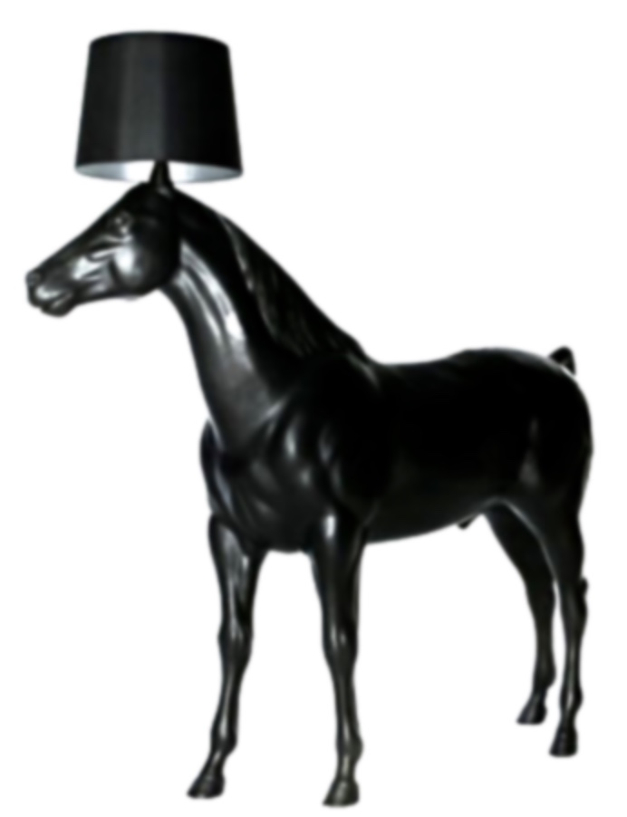

This page holds some images that either are of my making or have inspired some useless corner of my brain, at some point, somewhere along the way. Once you've been robbed of precious seconds of life having wasted them looking at this page, feel free to move onto the links or perhaps even the equally criminal extras pages.
A perfect example being the life-sized standing lamp that so pointlessly and indulgently finds it's legs in a replica of Phar Lap long before it entertains the idea of using, say, a tripod! Pure Genius!
